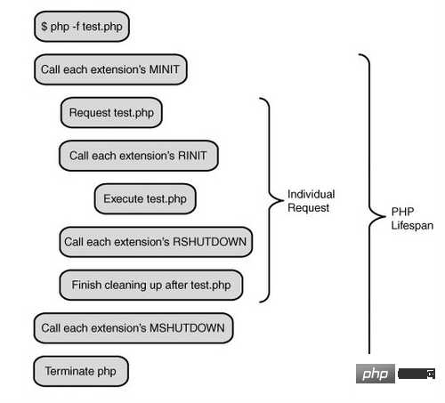

直接套用Swoole官网的介绍：
PHP的异步、并行、高性能网络通信引擎，使用纯C语言编写，提供了PHP语言的异步多线程服务器，异步TCP/UDP网络客户端，异步MySQL，异步Redis，数据库连接池，AsyncTask，消息队列，毫秒定时器，异步文件读写，异步DNS查询。
Swoole内置了Http/WebSocket服务器端/客户端、Http2.0服务器端。 ）
PHP为什么要补充swoole
swoole框架相比apache/fpm，主要节省PHP框架和全局对象每次请求创建销毁带来的性能损耗。
swoole框架给程序员提供了最大的空间，与http请求无关的全局对象只需要构造一次。程序中还可以对某些对象和数据进行缓存控制。
PHP是最好的语言，Swoole重新定义了最好的语言，这当然是个梗了，不过php做为一个入门低、开发快、执行效率高的一门语言，而在以快速著称的pc互联网时代，无可争议的成为首选，这是php的优势。
然后优势慢慢转化为思维定势，在很多工程师看来php开发就等同于web开发，然而如今已经是移动互联的时代，物联网，智能硬件也如火如涂，好像php不是那么受待见了（ps:一直如此），而swoole的出现，成功突破了这一思维定势，使phper可以从web开发跳出。
进入了更大的服务器网络编程领域，但web开发和服务器网络编程在开发思维上还是有很大的不同，本系列文章将通过swoole的介绍，帮助大家做思维转换，从而进入一个新天地。
PHP与SWOOLE的关系
swoole是php的一个扩展，纯c开发，主要是为了补充php在网络编程方面的不足
PHP与SWOOLE的运行模式
php做为swoole的宿主，所以了解php本身的运行模式是必不可少的，下图是以cli下执行一个php文件时的完整流程

这上层有个SAPI的概念，SAPI是php给外部环境能够执行php内核提供的一个统一接口,我们常见的三种SAPI有cli, php-fpm, mod_php。
以上是文章全部内容，有需要学习交流的友人请加入交流群的咱们一起，有问题一起交流，一起进步！前提是你是学技术的。感谢阅读！